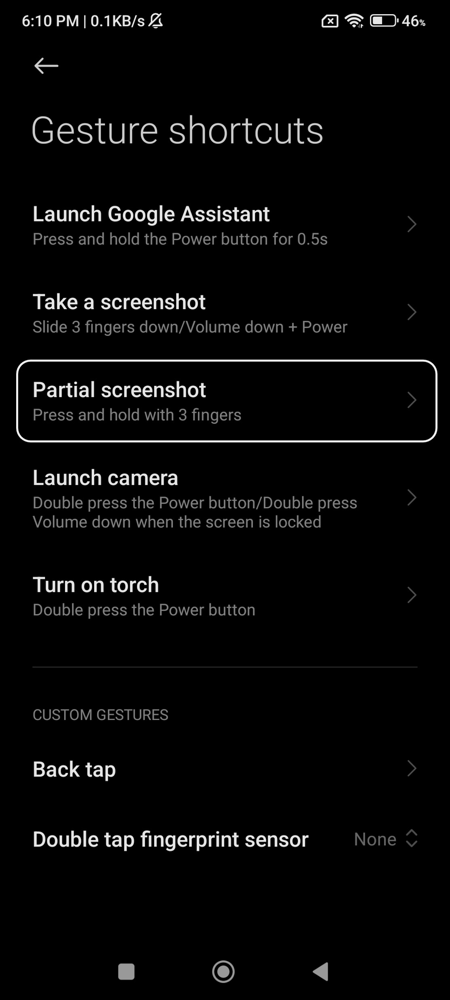

Taking Screenshot#
A screenshot is basically a captured image of the content currently displaying on your phone screen. Taking a screenshot can be helpful in manu scenarios.
Saving a receipt or confirmation page after making an online purchase.
Sharing a funny or interesting moment from social media with your friends.
Capturing information that might be deleted in the future.
There are different ways to take screenshot and we will go over them in this tutorial.
Full Screen Screenshot#
First, go to ‘Settings’ and scroll down to ‘Additional Settings’.


Now go to ‘Gesture shortcuts’ and from there go to ‘Take a screenshot’.
Now make sure the toggle beside volume down + power option is enabled. If it’s currently disabled, click on the toggle to enable it. When the toggle is enabled, it will have the blue color.
Now, let’s imagine you are watching an YouTube video and you want to save the top two comments. So, you pause the video at a key moment to take a screenshot. Now press the volume down and the power button at the same to capture the screenshot.
You can also scroll down from top twice and then click on ‘Screenshot’ to take the screenshot.
Congratulations! Now, you can view your screnshot from the gallery or photos app on your phone.
Partial Screenshot#
You can always go back to your screenshot and crop and just keep a specific part of your screenshot. But instead of cropping a full-screen screenshot, you can just capture only a specific area on your phone. This is called partial screenshot.
To take a partial screenshot, go back to ‘Gesture shortcuts’ but click on ‘Partial screenshot’ this time. Make sure
Now, let’s imagine in the following video, we only want to take screenshot of the first comment. Press and hold anywhere on the screen with three fingers and the screen will look like the image to the right.
The phone will tell you in an animation to click and drag anywhere on the screen to form a rectangle. Following the animation, create a rectangle around the first comment and then click the ‘Save’ button in the bottom right corner.
That’s it! You have successfully taken a partial screenshot.
Long Screenshot#
There can be times where you might want to take screenshot of a long menu. Instead of taking multiple screenshots, you can take one long screenshot that contains the entire menu. For this example, we will try to capture the entire settings menu in one screenshot.
Like before, click on the volume down and power button simultaneously. This will show the screenshot popup. Click ‘Scroll’. Now, the system will take couple of seconds to scroll through the settings menu and capture one long screenshot.
After couple of seconds, you will see one long screenshot and you will have the option to crop and keep upto whatever part you want. As you crop, you will see a zoomed in version that makes it easier to read and crop at the right place. After you are done cropping, click on the checkmark button at the top right hand corner.
That’s all there is to taking screenshots. If any of these felt too complicated, don’t worry, you will learn it over tiime with practice.